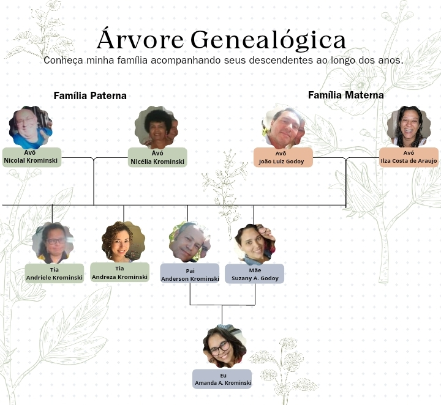
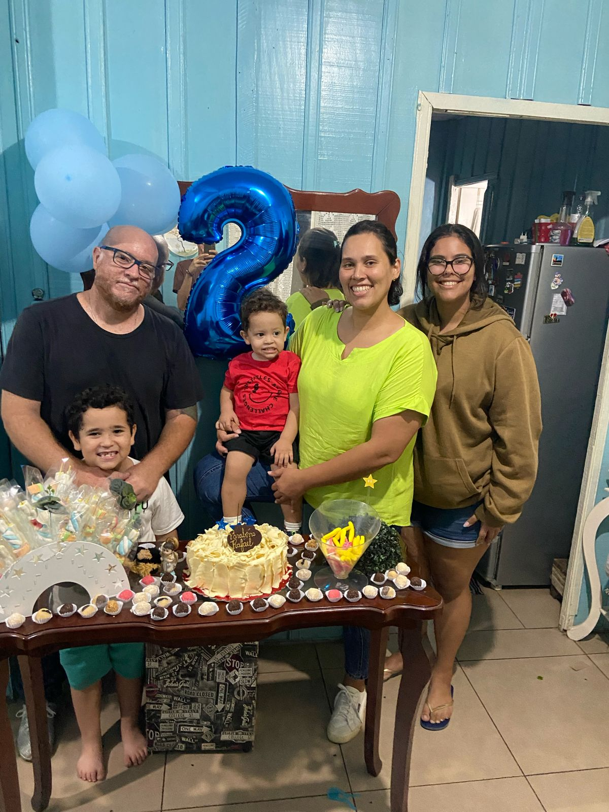

Essa daqui é mais ou menos a árvore genealogica da minha familia
Segundo minha bisa,Zulmira Costa de Araujo, meus Tataravós,Jucelino Marino da Costa e Maria Auria da Conceiçâo, são de Passos-Minas Gerais, nasceram e foram criados por lá, assim como minha bisa. De minas eles foram par São Paulo,la eles construiram uma casinha em um terreno, porém como o terreno era alugado, eles acabaram tendo que sair de lá, e então eles conseguiram achar um sítio em Taguajé, que foi onde minha bisa se casou com meu biso, João Vicente de Araujo.Após se casarem se mudarm para Sertanópolis e la costruiram sua vida, arrumaram uma casa, e ao longo dos anos tiveram 4 filhos de sangue, e adotaram mais 1, totalizando 5 filhos, Izabel Costa de Araujo, Pedro Costa de Araujo, Ilza Costa de Araujo, Enaldo Costa de Araujo e Gleice Costa e Araujo. Agora sim vamos falar sobre a árvore genealógica da foto, Minha Avó, Ilza Costa de Araujo, é a terceira filha entre os 5, sendo assim a filha do meio. Ela teve 3 filhos no total, Suzany Costa de Araujo, Vinicius Costa de Araujo e João Gabriel Costa de Araujo, seu primeiro filho foi minha mãe, Suzany Costa de Araujo, que ela teve com seus 15 anos. Após ter minha mãe, ela continuou na casa de meus bisos até que engravidou do segundo fiho aos 18, no casi, meu tio, Vinicius. Logo após saber da grávides, ela saiu da casa de meus bisos deixando minha mãe para ele criarem. Meus bisos criaram minha mãe ate ela completar mais ou menos uns 10/11 anos, após essa idade ela foi morar com minha vó e meu tio. Depois de uns 8/9 anos ela teve meu tio mais novo, João Gabriel. Com 19 minha mãe conheceu meu pai, Anderson Krominski no trabalho e após um tempo de amizade ele começaram a namorar e então 1 ano depois se casaram em 16/03/2006. Quando minha mãe tinha 20 e meu pai 27, minha mãe descobriu que estava grávida de mim, e após 9 mêses eu nasci, dia 30/11/2007. Quando eu completei meus 3 anos de idade, meus pais acabaram se separando e indo cada um morar n seu canto, eu fui com minha mãe, mas continuei vendo meu pai de 15 em 15 dias, passando um final de semana com ele e outro com minha mãe. Quando eu tinha 6 anos, minha mãe apresentou um "amigo" dela, que futuramente veio ser meu padrasto, Thiago Henrique Lemos. Após 4 anos juntos, eles tiveram seu primeiro filho com muita insistencia minha por querer um "irmãozinho",então quando eu tinha 10 anos meu primeiro irmão nasceu, José Miguel Araujo Lemos. E quando o José ja estava com seus 5 anos, minha mãe acabou descubrindo que estava grávida novamente, só que agora do Rafael Henrique de Araujo Lemos, meu irmãozinho mais novo. E Hoje em 2023 continuamos todos os 5 juntos, minha mãe com 39 anos, Meu padrasto com 45, eu com 16, meu irmão do meio com 7 e o Rafael com 2. 